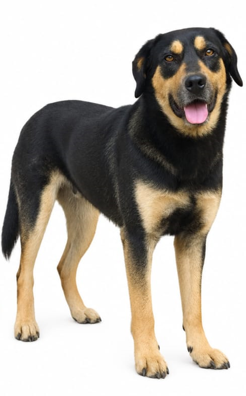
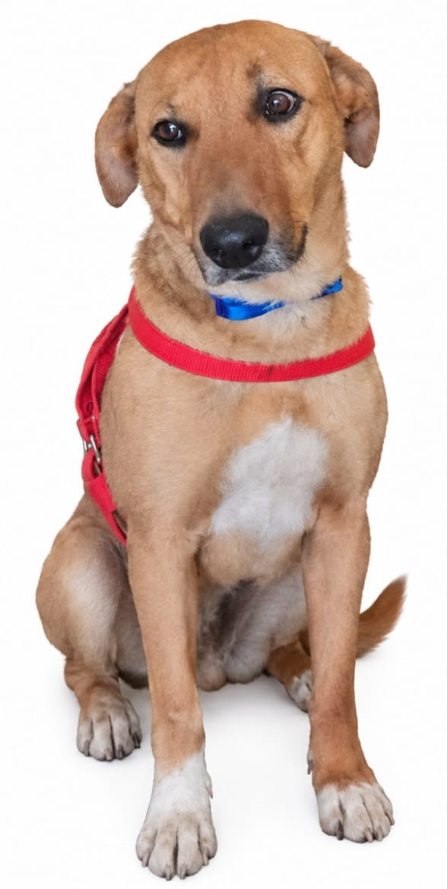
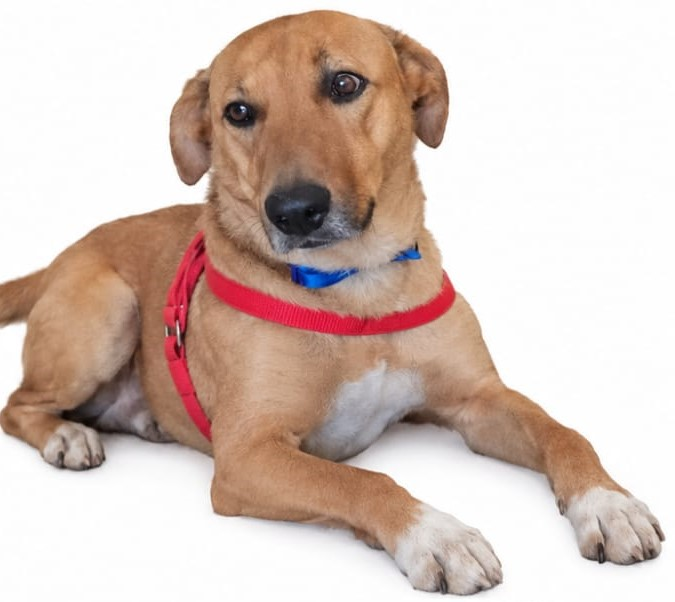
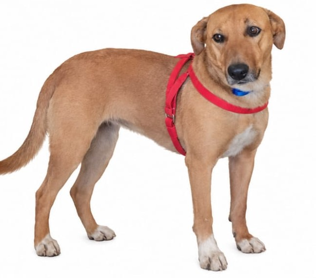

🐶
Duke
Duke fue un compañero especial. Su presencia, sus gestos y los momentos compartidos dejaron recuerdos que permanecen vivos.
Dos nombres, dos historias y una huella que permanecerá para siempre en el corazón.
EN MEMORIA DE DOS COMPAÑEROS ESPECIALES
Ver despedidaUn pequeño espacio para conservar aquello que el tiempo nunca debería borrar.
Duke y Ken formaron parte de momentos que merecen ser recordados. Cada día compartido, cada mirada, cada juego y cada instante de compañía forma parte de una historia que continúa viviendo en la memoria.
Dos compañeros que merecen ser recordados individualmente y juntos.
Duke fue un compañero especial. Su presencia, sus gestos y los momentos compartidos dejaron recuerdos que permanecen vivos.
Ken dejó su propia huella. Cada recuerdo suyo representa una parte importante de una historia llena de cariño y compañía.
Pequeños momentos que hacen que una vida compartida continúe presente.
Los instantes sencillos de todos los días son muchas veces los recuerdos que más permanecen.
Nunca fue solamente estar juntos. Fue compartir una parte de la vida.
El tiempo puede cambiar muchas cosas, pero no puede borrar aquello que realmente significó algo.
Hay recuerdos que no necesitan palabras para permanecer.
Cada juego y cada momento de alegría puede convertirse en un recuerdo para toda la vida.
Duke y Ken continúan presentes en la memoria de quienes compartieron su historia.
Una colección exclusiva para las fotografías de Duke y Ken. Haz clic en cualquier imagen para verla ampliada.




Recuerdos en movimiento para conservar momentos especiales.
Espacio exclusivo para conservar voces, sonidos, mensajes y otros recuerdos de audio.
Una grabación especial dedicada a Duke.
Una grabación especial dedicada a Ken.
Un recuerdo dedicado a ambos.
Duke y Ken, gracias por todos los momentos compartidos, por la compañía y por cada recuerdo que dejaron.
Sus historias no terminan aquí. Permanecen en las fotografías, en los videos, en los sonidos y, sobre todo, en la memoria de quienes los quisieron.
Algunas huellas no desaparecen nunca.